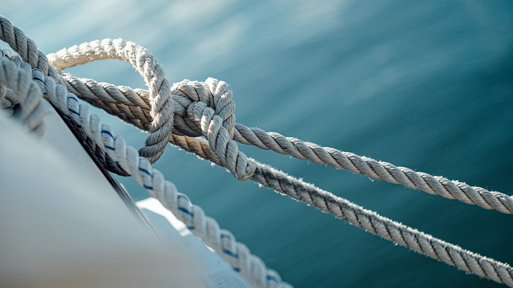

Servicios exclusivos de protección para embarcaciones de uso particular que no excedan los 15 metros de eslora, trabajamos con coberturas de hasta todo riesgo y reembolsos en su totabilidad.
Servicios exclusivos de protección para embarcaciones de uso particular que no excedan los 15 metros de eslora, trabajamos con coberturas de hasta todo riesgo y reembolsos en su totabilidad.
Brindamos confort y seguridad a la hora de utilizar una embarcación de manera eficiente. Protegemos los daños totales de tu embarcación, tanto navegando como en puerto, dársena, guardería, mientras es sacada de la guardería por medios mecánicos, durante las operaciones de sacada a tierra y botadura y también, durante la operación de reparaciones normales o de grandes trabajos de reparación.
Con Assurin tu embarcacion esta protegida, tenemos coberturas amplias y flexibles. Para saber mas sobre nuestros planes, te invitamos a contactarnos para asesoramiento a medida. Podrá consultar también el “detalle de coberturas” y conocer más acerca de los alcances y limitaciones básicos de cada plan.
Incluye: Responsabilidad Civil a personas transportadas y no transportadas, Incendio total y parcial, Rotura de una hélice por vigencia anual.
Incluye: Todo lo del plan Bronce + Responsabilidad Civil por daños a cosas de terceros, Pérdida total por colisión y/o incendio, Salvamento y gastos por salvamento.
Incluye: Todo lo del plan Plata + Daños totales y parciales por hundimiento, naufragio, colisión, incendio, temporal e inundación, Robo parcial y total, Transporte en trailer.